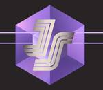

Socket
フィード

JavaScript Community Launches e18e Initiative to Improve Ecosystem Performance
Socket
The JavaScript community has launched the e18e initiative to improve ecosystem performance by cleaning up dependency trees, speeding up critical parts of the ecosystem, and documenting lighter alternatives to established tools.
11時間前

Introducing Enhanced Alert Actions and Triage Functionality
Socket
Socket now supports four distinct alert actions instead of the previous two, and alert triaging allows users to override the actions taken for all individual alerts.
5日前

Namecheap Takes Down Polyfill.io Service Following Supply Chain Attack 11
11
Socket
Polyfill.io has been serving malware for months via its CDN, after the project's open source maintainer sold the service to a company based in China.
5日前

OpenSSF Warns of Reputation Farming Leveraging Closed GitHub Issues and PRs
Socket
OpenSSF is warning open source maintainers to stay vigilant against reputation farming on GitHub, where users artificially inflate their status by manipulating interactions on closed issues and PRs.
6日前

New axobject-query Maintainer Faces Backlash Over Controversial Decision to Support Legacy Node.js Versions
Socket
A JavaScript library maintainer is under fire after merging a controversial PR to support legacy versions of Node.js.
7日前

2023 State of JavaScript Survey Highlights: Vite Dominates, TypeScript Adoption Soars
Socket
Results from the 2023 State of JavaScript Survey highlight key trends, including Vite's dominance, rising TypeScript adoption, and the enduring popularity of React. Discover more insights on developer preferences and technology usage.
11日前
DOJ Cracks Down on Federal Contractors for Failing to Meet Cybersecurity Requirements, Issues $11.3M in Penalties
Socket
The US Justice Department has penalized two consulting firms $11.3 million for failing to meet cybersecurity requirements on federally funded projects, emphasizing strict enforcement to protect sensitive government data.
13日前

ua-parser-js Drops MIT License, Adopts Controversial AGPLv3 + PRO Dual Licensing Model in Upcoming v2.0
Socket
ua-parser-js is set to drop the MIT license and adopt a controversial dual AGPLv3 + PRO licensing model in its upcoming v2.0 release, raising significant concerns among developers and enterprise users.
14日前
Researchers Uncover npm Registry Vulnerability to Cache Poisoning and DoS Attacks
Socket
Researchers recently demonstrated that the npm Registry is vulnerable to cache poisoning combined with DoS, posing significant risks for package availability.
17日前
TC39 June 2024 Meeting Roundup: 8 Proposals Advanced to Next Stages
Socket
The June TC39 meeting wrapped up this week with eight proposals moving on to the next stage. Here's a quick roundup of the features that the committee approved to advance.
18日前